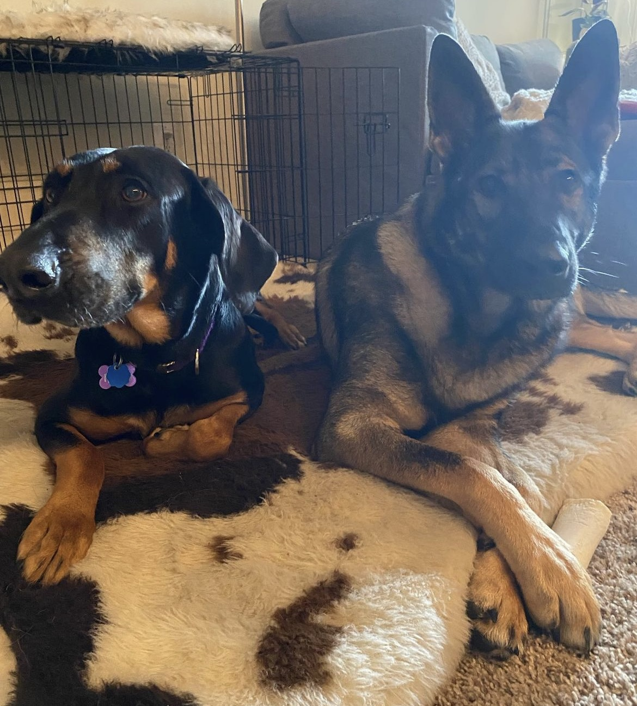

Maia's Magical Website

"Paint me like one of your french dogs"

Maia spending time with her friend, Luna
Welcome to Maia's Magical Website!!! Maia is a rescue dog who was adopted by her dad, or shall we say "paw"ther in 2021 during the Covid-19 Pandemic. She is a mixed breed, consisting of part Doberman Pinscher and part Laborador Retriever.